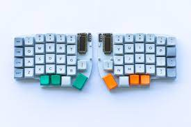

Membrane VS Ergonomic Keyboards
September 2020 Many retro game enthusiasts would tell you that a Sony PVM (Professional Video Monitor) is the pinnacle of the game displays that offers visuals of the highest calibre in contrast precision and beauty. Built with probably the most advanced CRT technology ever created, these monitors sell for a boatload, seeing that the CRT (Cathode Ray Tube) business is all but dead since around the year 2010. Not to far before the demise of analog TV in the US.
The few odd parts of the room that have not been cornered by the LCD market are 1) legacy airline industry 2) retrogaming and arcade enthusiasts. Sure enough, CRT has several advantages for how old and outdated it may now appear, with it’s large rear end and loud eletric hum. Probably the most important point is its analog design. Without the need for often slower digital memory for high resolution output, we have a zero-lag TV. It also supports various analog quirks of older computers and video game consoles which targeted analog signals.
